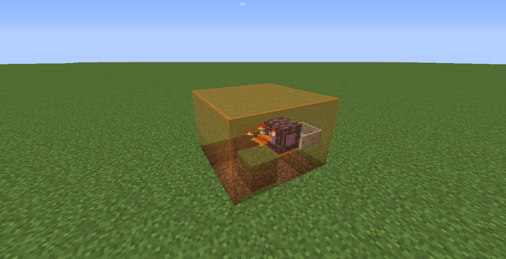

焱璜
学习炼铜技术，铸造钢铁之桥。
焱璜可以通过吸收铜锭、铜矿、铜块产生魔力，使用掉落物或者方块的形式均可。
- 掉落物 铜锭：+100魔力，+20tick延时
- 掉落物 铜矿：+120魔力，+20tick延时
- 掉落物 铜矿：+900魔力，+60tick延时
- 方块 铜矿：+100魔力，+20tick延时
- 方块 铜块：+900魔力，+60tick延时
检测时按照如上顺序检测，检测到后立即停止后续的检测，并按照该事件进行产魔和增加延时。
掉落物的检测范围为7x7x7的整个方块内；而方块的检测范围仅为3x3x3的方块。
